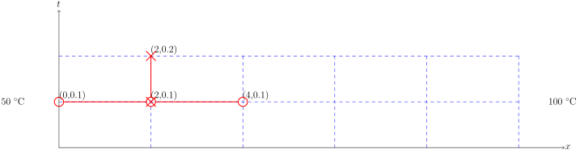
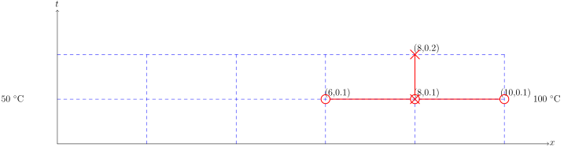

Ejemplo
Resolver $$ \begin{equation*} k \frac{\partial^{2} T}{\partial x^{2}} = \frac{\partial T}{\partial t} \end{equation*} $$
para $$ \begin{align*} k &= 0.835 \\ T(0 < x < 10, 0.2) &= ? \end{align*} $$
sujeto a $$ \begin{align*} T(0, t) &= 100 \\ T(10, t) &= 50 \\ T(0 < x < 10, 0) &= 0 \end{align*} $$
para la solución numérica usamos $$ \begin{align*} \Delta x &= 2 \\ \Delta t &= 0.1 \end{align*} $$
Condición inicial
imagen $$ \begin{align*} T^{0}_{0} &= 100 \\ T^{0}_{1} &= 0 \\ T^{0}_{2} &= 0 \\ T^{0}_{3} &= 0 \\ T^{0}_{4} &= 0 \\ T^{0}_{5} &= 50 \end{align*} $$
Para \( l = 0 \) $$ \begin{align*} T^{l+1}_{i} &= T^{l}_{i} + k \frac{\Delta t}{\Delta x^{2}} (T^{l}_{i-1} - 2 T^{l}_{i} + T^{l}_{i+1}) \\ T^{0+1}_{i} &= T^{0}_{i} + k \frac{\Delta t}{\Delta x^{2}} (T^{0}_{i-1} - 2 T^{0}_{i} + T^{0}_{i+1}) \\ T^{1}_{i} &= T^{0}_{i} + k \frac{\Delta t}{\Delta x^{2}} (T^{0}_{i-1} - 2 T^{0}_{i} + T^{0}_{i+1}) \end{align*} $$
Nodo 1 $$ \begin{align*} T^{1}_{i} &= T^{0}_{i} + k \frac{\Delta t}{\Delta x^{2}} (T^{0}_{i-1} - 2 T^{0}_{i} + T^{0}_{i+1}) \\ T^{1}_{1} &= T^{0}_{1} + k \frac{\Delta t}{\Delta x^{2}} (T^{0}_{1-1} - 2 T^{0}_{1} + T^{0}_{1+1}) \\ T^{1}_{1} &= T^{0}_{1} + k \frac{\Delta t}{\Delta x^{2}} (T^{0}_{0} - 2 T^{0}_{1} + T^{0}_{2}) \end{align*} $$
Nodo 2 $$ \begin{align*} T^{1}_{i} &= T^{0}_{i} + k \frac{\Delta t}{\Delta x^{2}} (T^{0}_{i-1} - 2 T^{0}_{i} + T^{0}_{i+1}) \\ T^{1}_{2} &= T^{0}_{2} + k \frac{\Delta t}{\Delta x^{2}} (T^{0}_{2-1} - 2 T^{0}_{2} + T^{0}_{2+1}) \\ T^{1}_{2} &= T^{0}_{2} + k \frac{\Delta t}{\Delta x^{2}} (T^{0}_{1} - 2 T^{0}_{2} + T^{0}_{3}) \end{align*} $$

Nodo 3 $$ \begin{align*} T^{1}_{i} &= T^{0}_{i} + k \frac{\Delta t}{\Delta x^{2}} (T^{0}_{i-1} - 2 T^{0}_{i} + T^{0}_{i+1}) \\ T^{1}_{3} &= T^{0}_{3} + k \frac{\Delta t}{\Delta x^{2}} (T^{0}_{3-1} - 2 T^{0}_{3} + T^{0}_{3+1}) \\ T^{1}_{3} &= T^{0}_{3} + k \frac{\Delta t}{\Delta x^{2}} (T^{0}_{2} - 2 T^{0}_{3} + T^{0}_{4}) \end{align*} $$
Nodo 4 $$ \begin{align*} T^{1}_{i} &= T^{0}_{i} + k \frac{\Delta t}{\Delta x^{2}} (T^{0}_{i-1} - 2 T^{0}_{i} + T^{0}_{i+1}) \\ T^{1}_{4} &= T^{0}_{4} + k \frac{\Delta t}{\Delta x^{2}} (T^{0}_{4-1} - 2 T^{0}_{4} + T^{0}_{4+1}) \\ T^{1}_{4} &= T^{0}_{4} + k \frac{\Delta t}{\Delta x^{2}} (T^{0}_{3} - 2 T^{0}_{4} + T^{0}_{5}) \end{align*} $$
Para \( l = 1 \) $$ \begin{align*} T^{l+1}_{i} &= T^{l}_{i} + k \frac{\Delta t}{\Delta x^{2}} (T^{l}_{i-1} - 2 T^{l}_{i} + T^{l}_{i+1}) \\ T^{1+1}_{i} &= T^{1}_{i} + k \frac{\Delta t}{\Delta x^{2}} (T^{1}_{i-1} - 2 T^{1}_{i} + T^{1}_{i+1}) \\ T^{2}_{i} &= T^{1}_{i} + k \frac{\Delta t}{\Delta x^{2}} (T^{1}_{i-1} - 2 T^{1}_{i} + T^{1}_{i+1}) \end{align*} $$
Nodo 1 $$ \begin{align*} T^{2}_{i} &= T^{1}_{i} + k \frac{\Delta t}{\Delta x^{2}} (T^{1}_{i-1} - 2 T^{1}_{i} + T^{1}_{i+1}) \\ T^{2}_{1} &= T^{1}_{1} + k \frac{\Delta t}{\Delta x^{2}} (T^{1}_{1-1} - 2 T^{1}_{1} + T^{1}_{1+1}) \\ T^{2}_{i} &= T^{1}_{1} + k \frac{\Delta t}{\Delta x^{2}} (T^{1}_{0} - 2 T^{1}_{1} + T^{1}_{2}) \end{align*} $$

Nodo 2 $$ \begin{align*} T^{2}_{i} &= T^{1}_{i} + k \frac{\Delta t}{\Delta x^{2}} (T^{1}_{i-1} - 2 T^{1}_{i} + T^{1}_{i+1}) \\ T^{2}_{2} &= T^{1}_{2} + k \frac{\Delta t}{\Delta x^{2}} (T^{1}_{2-1} - 2 T^{1}_{2} + T^{1}_{2+1}) \\ T^{2}_{2} &= T^{1}_{2} + k \frac{\Delta t}{\Delta x^{2}} (T^{1}_{1} - 2 T^{1}_{2} + T^{1}_{3}) \end{align*} $$
Nodo 3 $$ \begin{align*} T^{2}_{i} &= T^{1}_{i} + k \frac{\Delta t}{\Delta x^{2}} (T^{1}_{i-1} - 2 T^{1}_{i} + T^{1}_{i+1}) \\ T^{2}_{3} &= T^{1}_{3} + k \frac{\Delta t}{\Delta x^{2}} (T^{1}_{3-1} - 2 T^{1}_{3} + T^{1}_{3+1}) \\ T^{2}_{3} &= T^{1}_{3} + k \frac{\Delta t}{\Delta x^{2}} (T^{1}_{2} - 2 T^{1}_{3} + T^{1}_{4}) \end{align*} $$
Nodo 4 $$ \begin{align*} T^{2}_{i} &= T^{1}_{i} + k \frac{\Delta t}{\Delta x^{2}} (T^{1}_{i-1} - 2 T^{1}_{i} + T^{1}_{i+1}) \\ T^{2}_{4} &= T^{1}_{4} + k \frac{\Delta t}{\Delta x^{2}} (T^{1}_{4-1} - 2 T^{1}_{4} + T^{1}_{4+1}) \\ T^{2}_{4} &= T^{1}_{4} + k \frac{\Delta t}{\Delta x^{2}} (T^{1}_{3} - 2 T^{1}_{4} + T^{1}_{5}) \end{align*} $$

filas = 3
columnas = 6
A = zeros(filas, columnas)
for i=1:filas
A[i,1] = 100
A[i,columnas] = 50
end
k = 0.835
Δx = 2.0
Δt = 0.1
for i=2:filas
for j=2:columnas - 1
A[i,j] = A[i-1,j] + (k * (Δt/Δx^2) * (A[i-1,j-1] - (2*A[i-1,j]) + A[i-1,j+1]))
end
end
A
3x6 Array{Float64,2}:
100.0 0.0 0.0 0.0 0.0 50.0
100.0 2.0875 0.0 0.0 1.04375 50.0
100.0 4.08785 0.0435766 0.0217883 2.04392 50.0